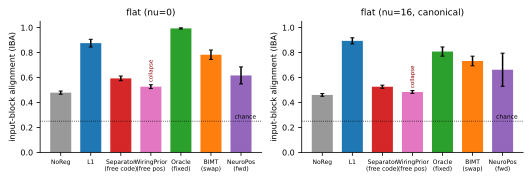

A learned neuron representation does not make weights
modular
On the additive bench a plain \(\ell_1\) penalty aligns weights to the
task’s factors better than any of our representation regularizers —
which collapse

Setup
Bench.
The v10 additive cell \(y=\sum_{k=1}^{4}f_k(z_{S_k})\) with disjoint factor pairs \(S_k\) and nonlinear sinusoidal leaves \(f_k\); MLP \(d{\to}64{\to}64{\to}1\), GELU, AdamW (\(10^{-3}\)), \(20\)k steps, the production recipe. Two cells: \(\nu{=}0\) (8 signal inputs \(=\) the 4 factor pairs, so the ground-truth modules are input-coordinate-aligned and the metric is crisp) and \(\nu{=}16\) (canonical, \(+16\) nuisance dims). \(5\) seeds (extended to \(10\) for the headline tests).
Metric.
Input-block alignment (IBA): for each active hidden neuron, the fraction of its signal-input weight mass that lands on its single dominant factor set; averaged over neurons. A distributed/rotated solution scores at chance \(1/K=0.25\); a clean block solution scores \(1\). For rotated cells we first map \(W_0\)’s signal block to latent-factor coordinates (Report 3). To control for the fact that any sparse net trivially looks block-pure, we also report the degree-normalized bipartite modularity \(Q_{\mathrm{block}}\) (Barber 2007) of the \(|W_0|\) input\(\to\)hidden graph, which a random graph scores at \(0\). Both are read directly from the converged weights; neither uses the representation, so all methods are compared on the same footing.
Result: the representation methods underperform \(\ell_1\) and collapse
Table 1 and Fig. 1 give the picture. Ordering the methods by IBA on the canonical cell: \(\ell_1\) (\(0.89\)) \(>\) Oracle-strong (\(0.81\), Report 3) \(>\) BIMT (\(0.73\)\(/\)\(0.76\)) \(>\) Separator (\(0.53\)) \(>\) WiringPrior (\(0.48\)) \(\approx\) NoReg (\(0.46\)). The two representation regularizers — the whole point of the project — land at the bottom, beneath a one-line \(\ell_1\) penalty, and WiringPrior is statistically indistinguishable from no regularization at all on the input side. \(Q_{\mathrm{block}}\) confirms this is real block structure, not a sparsity artifact: \(\ell_1\) reaches \(Q_{\mathrm{block}}=0.62\)–\(0.64\) versus Separator \(0.33\)–\(0.38\) and WiringPrior \(0.23\)–\(0.27\) (NoReg \(0.20\)–\(0.22\)).
| IBA | \(Q_{\mathrm{block}}\) | collapse | |||
|---|---|---|---|---|---|
| 2-3(lr)4-5 method | \(\nu{=}0\) | \(\nu{=}16\) | \(\nu{=}0\) | \(\nu{=}16\) | (\(\nu{=}0\)) |
| NoReg | 0.478 | 0.460 | 0.216 | 0.202 | — |
| \(\ell_1\) | 0.875 | 0.893 | 0.620 | 0.639 | — |
| Separator (free code) | 0.593 | 0.526 | 0.377 | 0.327 | 0.33 |
| WiringPrior (free position) | 0.527 | 0.484 | 0.271 | 0.226 | 1.00 |
| Oracle (fixed, strong \(c\)) | 0.993 | 0.808 | 0.726 | 0.518 | — |
Paired effect sizes (\(n{=}10\) seeds).
On \(\nu{=}0\), \(\ell_1\) beats Separator on IBA by Cohen’s \(d{=}7.8\) and WiringPrior by \(d{=}9.0\); on \(\nu{=}16\) it beats Separator by \(d{=}11.5\) — all at \(p{=}0.002\) (paired Wilcoxon, the two-sided minimum at \(n{=}10\)). WiringPrior’s collapse index is \(1.00\) on every seed versus Separator’s \(0.33\).
Why: decoupling and collapse
The cause is structural, not a tuning failure. In all of these methods the prediction is \(f_W(x)\) — the representation \(\pi\) (Separator’s codes, WiringPrior’s positions) never enters the forward pass, so \(\partial\mathrm{MSE}/\partial\pi\equiv0\) and the only forces on \(\pi\) are the regularizer’s own gradient and weight decay (theory report, P1). With a symmetric distance and free \(\pi\), the penalty’s global minimum includes the degenerate “all codes coincident” configuration (P2), and that is where the optimizer goes: WiringPrior’s positions contract to a point (\(100\%\) collapse), Separator’s codes merge channel-by-channel. A collapsed \(\pi\) prices every edge equally, so the wiring penalty degenerates into an undifferentiated shrinkage — strictly weaker than \(\ell_1\), which at least prices by magnitude. The representation cannot do better than \(\ell_1\) because, once collapsed, it is a worse \(\ell_1\).
The codes never recover the factors.
Independently of weights, the converged codes carry no factor information: binarized input-boundary codes give adjusted Rand index \(\approx0\) against the true factor sets (established in the forensic reports), and the geometry is set by optimizer artifacts (Adam drives positions to the \(2^d\) sign-orthant corners, codes to the \(2^K\) hypercube corners) rather than by the task. The MSE gains these methods do post (Separator and WiringPrior fit as well as \(\ell_1\) here, MSE \(\approx0.014\)) come from capacity governing — pruning redundant units during the codes’ transient life — not from discovering the decomposition.
Caveats
IBA is an input-side, neuron-aligned metric; the functional modules of these networks are real but live in rotated subspaces (causal-patching \(R^2\approx0.8\) for Separator), which a per-neuron view cannot see — that ceiling is the subject of Report 3. The comparison uses each method’s canonical-cell winning hyperparameters (equal-budget searched in the production sweep); the Oracle coupling was deliberately swept (Report 3) because its searched “winner” under-couples. NeuroPos is excluded from the alignment ranking because it does not fit this task. The conclusion is narrow and firm: on this bench, learning a per-neuron representation to price weights yields less task-aligned weight modularity than not learning one at all and using \(\ell_1\).
Reproducibility. Methods/metrics in
notebooks/neurep_review/lib.py; sweep
gen_sweep.py (200\(+\)200
runs, results folded by aggregate.py); figure
make_figs.py. Theory and 18-paper synthesis:
theory.pdf, SYNTHESIS.md.